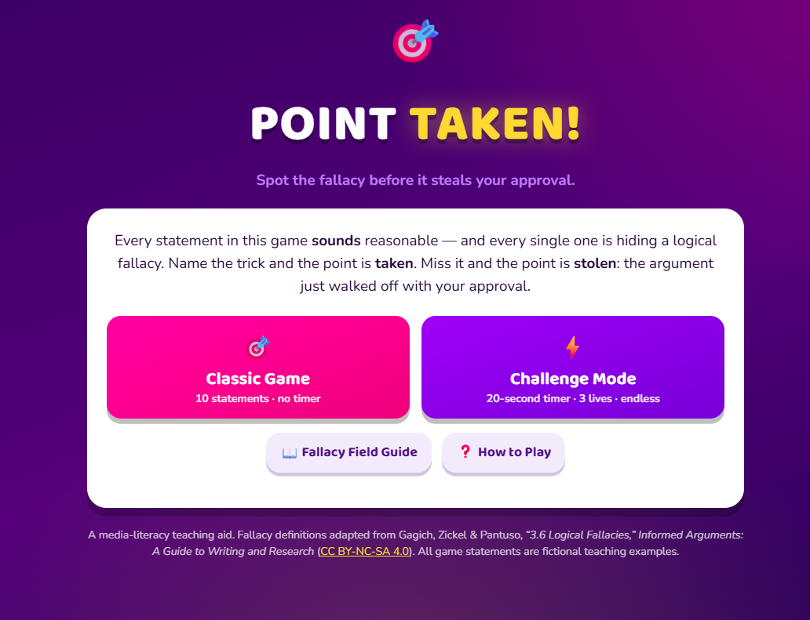

Week 4
Instructor-created game
Point Taken
A fallacy-identification game used in the Week 4 workshop on fallacies, omissions, weak reasoning, and fair persuasion. Students play it before attempting the Rhetorical Design Lab, where they build a persuasive message containing both sound and flawed reasoning.
Recognizing a fallacy in someone else’s argument is much easier than catching it in your own. Playing first makes the second task possible.
Framing note: students play Point Taken. They are not expected to build an agentic game like it — no coding is required anywhere in this course.